The dashboard shows the non-conformities (NCs) of FTO2: how many there are, on which aircraft and products, from which causes, at what cost, and whether each line is on its target. It only shows: nothing you click changes an NC or any data.
It is made of two pages:
| Page | What it is for | Rhythm |
|---|---|---|
| The NC dashboard | The year so far: totals, targets, causes, products, aircraft, cost, customer returns, cable requests. Two modes: Essentiel (two tabs, for the monthly reviews) and Deep dive (eight tabs, to analyse). | Month by month |
| The MFT page | One line at a time: the Pareto of the week, what rises and what falls, and the follow-up of the MFT actions. | Week by week |
| Your question | Where to look |
|---|---|
| Are we under our target this year? Which line is not? | Essentiel › Synthèse (chapter 4) |
| Which causes weigh the most? Are they getting better or worse? | Essentiel › Détail (chapter 5), Deep dive › Pareto (6.2) |
| Which products, aircraft or stations are concerned? | Deep dive › Localisation (6.3) |
| What does non-quality cost, and how is that cost calculated? | Deep dive › Coût de non-qualité (6.4) |
| What comes back from the assembly lines and the customers? | Deep dive › Retours clients (6.5) |
| Which cables are asked for again, and why? | Deep dive › Câbles (6.6) |
| What exactly does a cause name mean? | Deep dive › Définitions (6.7) |
| How many aircraft were built? Where do the rates come from? | Deep dive › Production (6.8) |
| What deserves a look this week? | The bell (chapter 7), the MFT page (chapter 9) |
| Is the action we started working? | MFT page › Suivi des actions (9.4) |
The NCs come from SAP, as Skywise holds them. The number of aircraft built comes from the production plan (the Tableau Avances / Retards). A few lists kept by the team complete them: the cable team's tracker, the GPS register, the Test list. A program in Skywise reads all of this and rebuilds the dashboard's data each time the person in charge of the dashboard runs it. The date at the top right of the page says up to which day the data goes.
The dashboard is a Skywise application. It opens in your browser like any Skywise page.
If the page does not open, or a red box appears, see chapter 11.
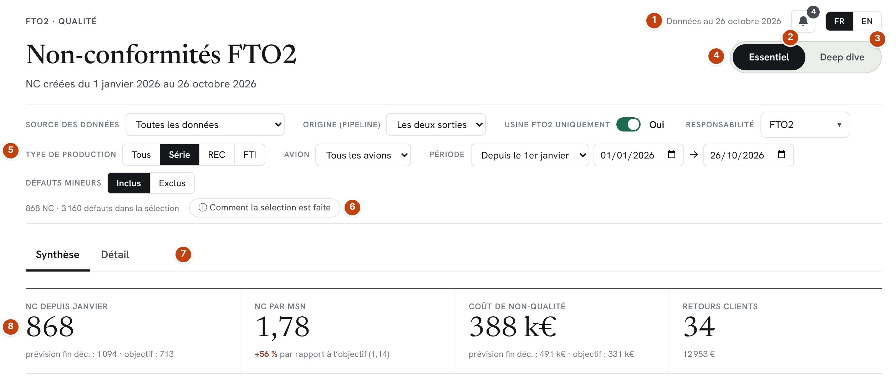
| Mode | Tabs | Use it to |
|---|---|---|
| Essentiel | Synthèse (summary), Détail (detail) | Follow the year and prepare the monthly reviews: the few charts that matter, large enough to be shown on a screen. Synthèse was designed for the QCM, Détail for the QLS of each line. |
| Deep dive | Vue d’ensemble, Pareto, Localisation, Coût de non-qualité, Retours clients, Câbles, Définitions, Production | Analyse: every chart, every list, the explanation of each calculation. |
The charts of Essentiel are the same as in Deep dive: they are borrowed from its tabs. The filters stay as they are when you change tab or mode. The browser usually remembers the mode and the language you used last.
| You do | You get |
|---|---|
| Read the line under the title | Each chart says in one or two lines how to read it: what a bar, a dot or a colour means. |
| Point at a bar, a dot, a cell | A small box with its exact figures. |
| Click a bar, a line, a month | The page keeps only that part of the data (section 3.3). Click again, or the ✕, to go back. |
| Click ⤢ (Agrandir, enlarge) | In Essentiel: the chart alone on the screen, with its full reading hint. Fermer closes it. |
| Open ▸ Voir les données (show the data) | The figures of the chart as a table. |
| Open a line that starts with ▸ | More charts (Autres graphiques) or the list of the NCs behind the tab (Détail des NC). |
The bar of filters at the top decides which NCs are on screen. Every figure and every chart of every tab follows it.
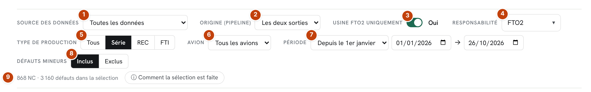
| Filter | What it does | As the page opens | |
|---|---|---|---|
| 1 | Source des données (data source) | Every NC comes from Skywise. Some are also on a list kept by the team: the GPS register or the Test list. This filter keeps all NCs, only those that are on no list, or only those of a list. | Toutes les données (all) |
| 2 | Origine (pipeline) (origin) | How the NC was found. Sortie normale: by the standard selection of FTO2's NCs. IDs manquants: NCs of the GPS register or the Test list that the standard selection does not catch, added by their number. | Les deux sorties (both) |
| 3 | Usine FTO2 uniquement (FTO2 plant only) | Oui: only the NCs raised at FTO2. Non: also the NCs raised elsewhere, such as the customer returns. No effect on the tabs Retours clients and Définitions. | Oui |
| 4 | Responsabilité (liability) | Who is liable for the NC in SAP: FTO2, the suppliers, others. Tick one or several; the number beside each name is its number of NCs. | FTO2 |
| 5 | Type de production (production type) | The phase of the NC: Série, REC or FTI. With REC, a switch Coût appears: cost of the NCs FTO2 is liable for, or of all of them. | Série |
| 6 | Avion (aircraft) | One line: A350, A330, A320, A400M. | Tous les avions (all) |
| 7 | Période (period) | The NCs created between two dates: since 1 January, the last month, the last 3, 6 or 12 months, all dates, or two dates you choose. | Depuis le 1er janvier |
| 8 | Défauts mineurs (minor defects) | Counts or leaves out the minor defects: a missing tie, lacing, cap or plug. It changes the number of defects, never the number of NCs. Not shown on the tabs Vue d’ensemble and Coût de non-qualité. | Inclus (included) |
| 9 | The selection | What all the filters keep: the NCs and their defects. Read it before reading a chart. |
Click ⓘ Comment la sélection est faite (how the selection is made). The page replays the filters one by one, in order, and shows what each one removes and what is left. Use it whenever a total surprises you, or differs from another report.
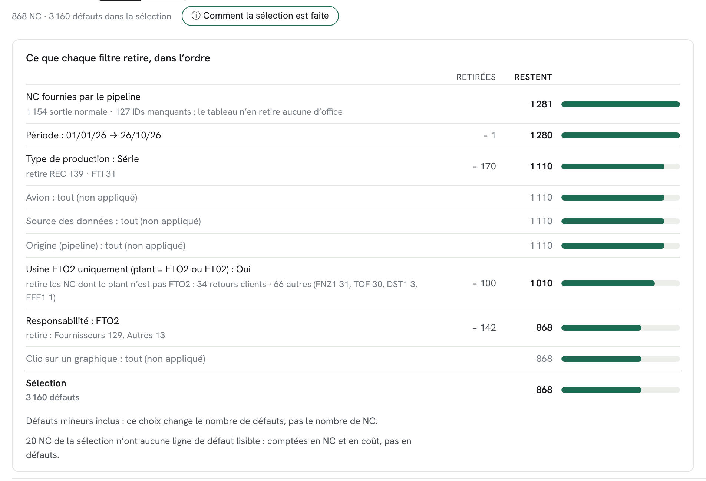
Most charts can be clicked. There are two cases.
The click filters the whole page. A line of aircraft, a product, a month, a week, an aircraft (MSN), a station: the click works as one more filter. A label appears in the filter bar 1; its ✕ removes it. Réinitialiser (reset) 2 puts every filter back as the page opens. The selection line 3 follows.
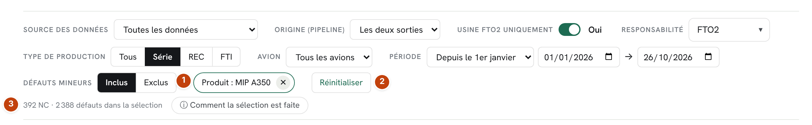
The click filters the tab. In the tabs Pareto, Coût de non-qualité and Retours clients, the bars of a card filter the other cards and the list of that tab. The bar clicked stays coloured 2 and a label appears under the title; ✕ removes it, Tout effacer (clear all) 1 removes them all. You can click in several cards: a category, then a line, then a FIN.
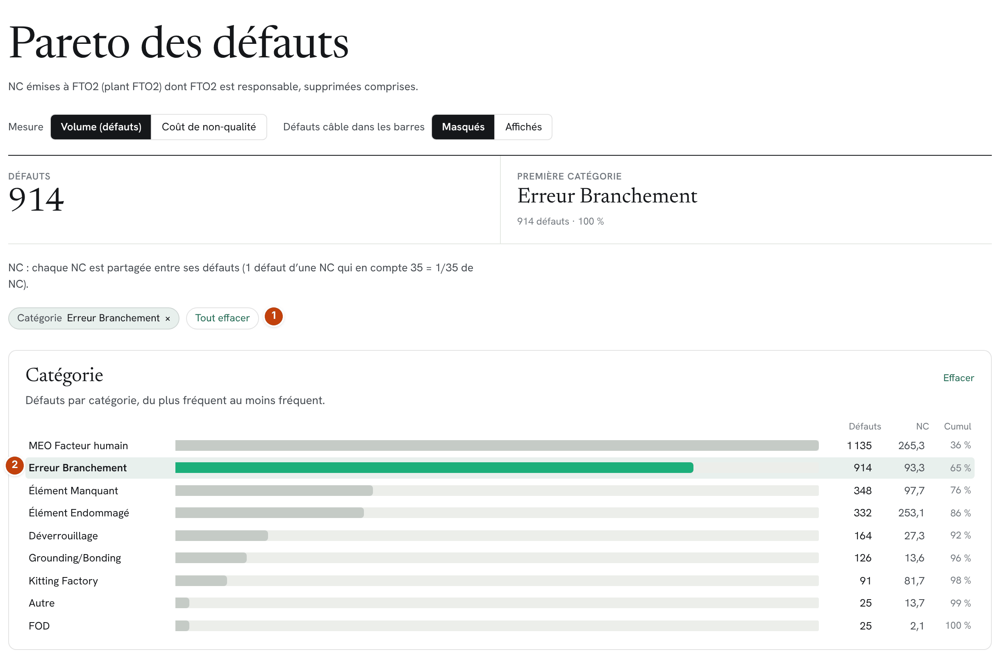
One screen to answer: where are we against the target, which line is off, which causes move. It is the tab the page opens on.
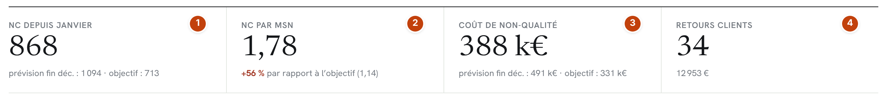
(Cumulative NCs over the year.) The curve adds the NCs month after month and compares them with the target.
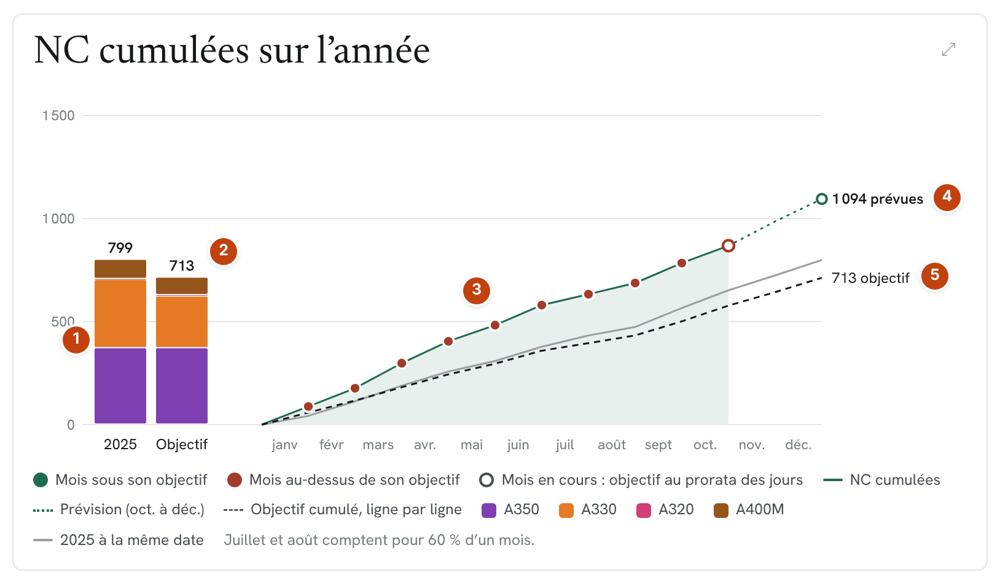
How to read it: the curve above the dashed line means more NCs than the target allows at this date. July and August count for about 60 % of a month, because of the shutdown. Click a month to keep the NCs created that month.
(Each line against its target.) One row per line, and one for all lines together.
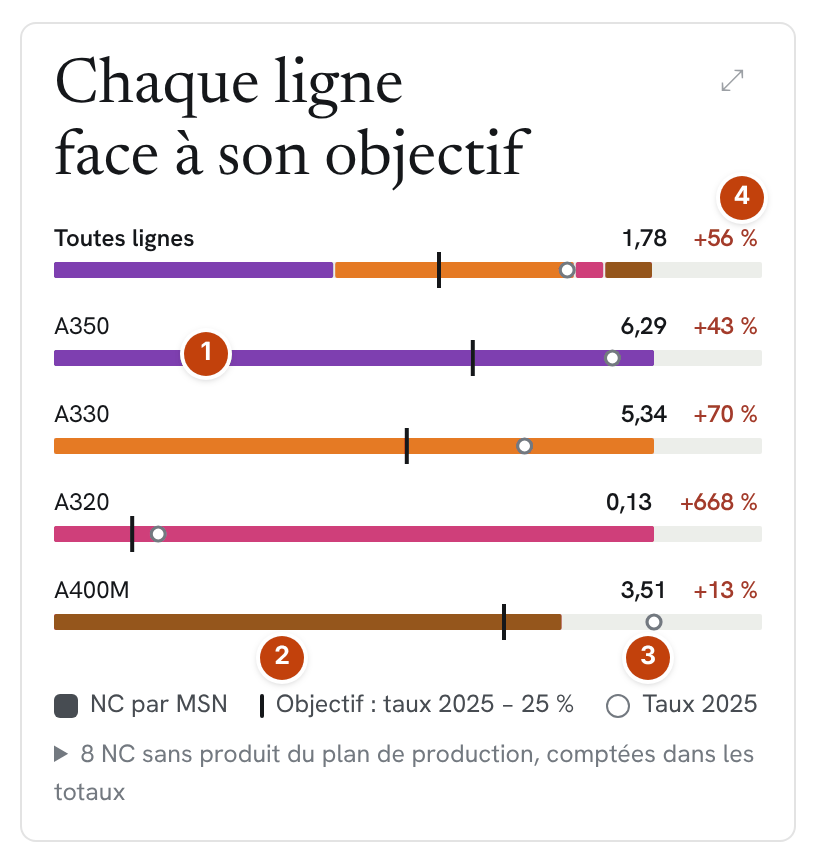
How to read it: a bar that goes past its tick is above the target. Click a row to keep that line on the whole page. The line NC sans produit du plan de production under the chart lists the few NCs that could not be matched to a product of the production plan: they count in the totals, not in the rates (chapter 11).
(Monthly ranking of root causes.) The rank of each of the eight main causes, month after month: 1 is the cause with the most defects that month.
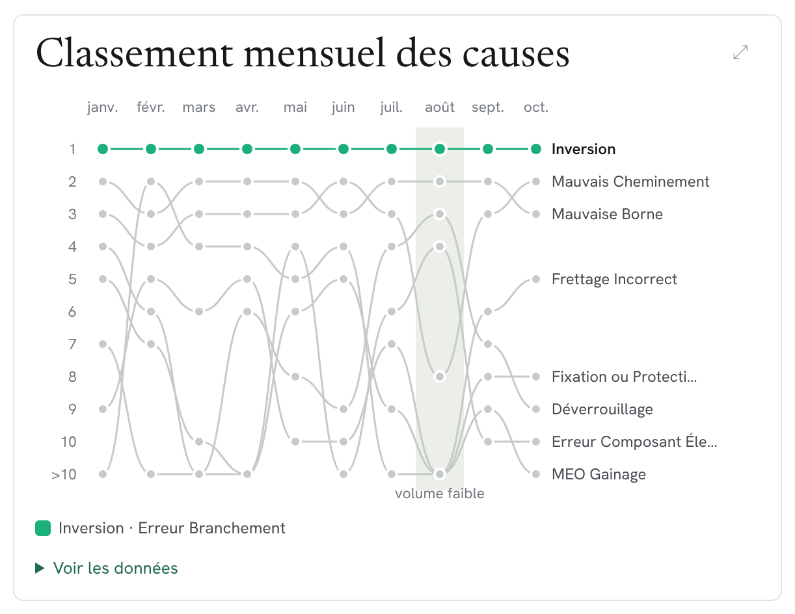
How to read it: a line that climbs towards rank 1 is a cause that takes more room. A grey band marks a month with few defects (volume faible), where ranks mean little.
(Root causes: last year against this year, A330 and A350.) Defects per MSN for the ten main causes of each year.
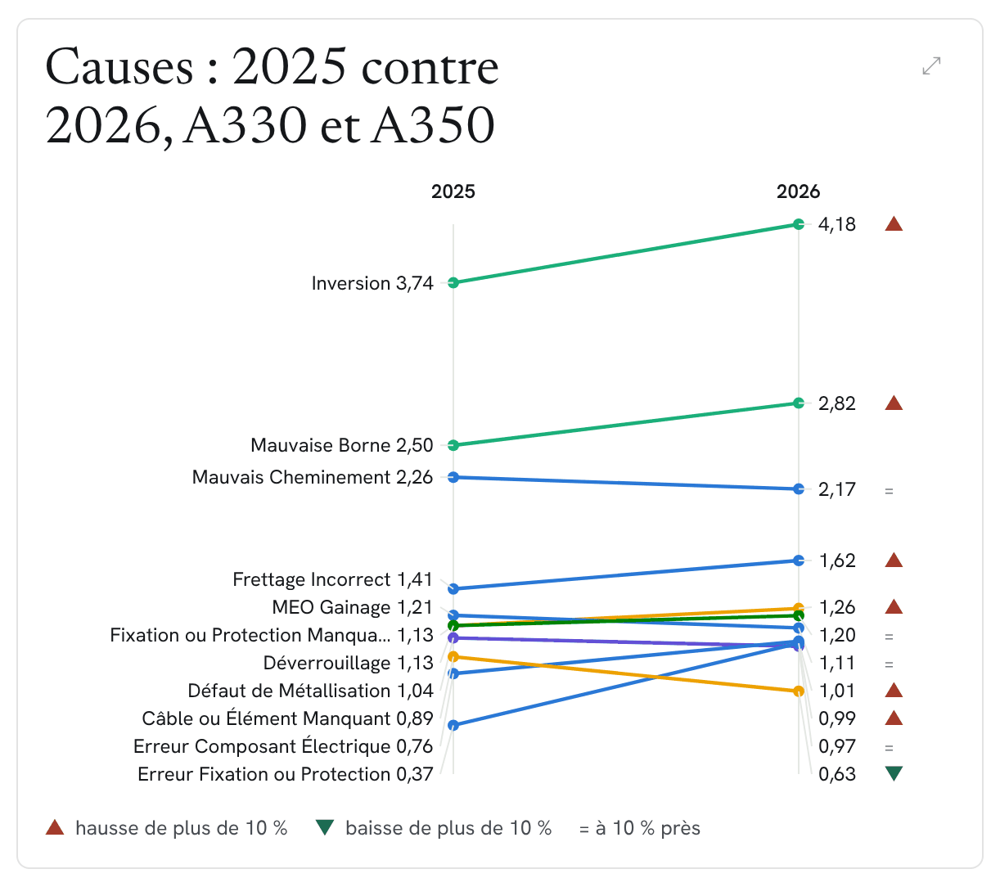
How to read it: a line that goes up is a cause that produces more defects per aircraft than last year. ▲ marks a rise of more than 10 %, ▼ a fall of more than 10 %, = a change of less than 10 %. The A320 is left out: its products are small parts counted one by one, which would pull the rates down.
(Volume or unit cost.) One bubble per cause: is it frequent, expensive, or both?
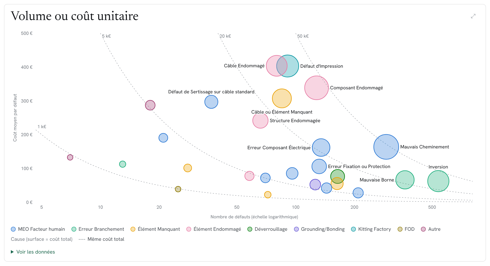
How to read it: to the right, the cause is frequent; towards the top, each defect is expensive; the size of the bubble is the total cost. The dotted curves join points of equal total cost (1 k€, 5 k€, 20 k€, 50 k€): a cause beyond the 50 k€ curve costs more than 50 k€ in total. A cause to the right and low is a matter of volume; a cause high and to the left is a matter of unit cost.
(NC detail.) At the bottom of the tab, the line ▸ Détail des NC opens the list of the NCs of the selection, the most recent first.
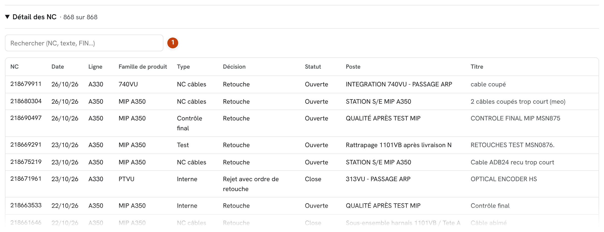
Type in the search box 1 to find an NC by its number, a word of its text or a FIN. The list shows 200 NCs at a time; Afficher 200 de plus at its end shows more.
The working view of a line: the Pareto of the categories, the causes month by month, the connection errors and the first causes of each product. Its charts always run from January to the end of the period chosen.
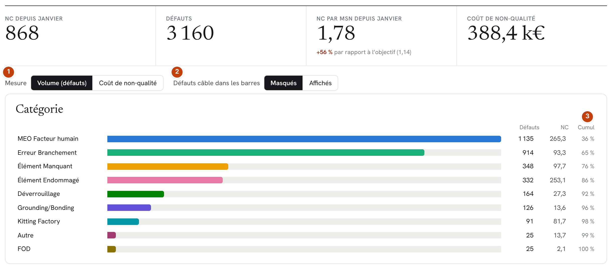
An NC often holds several defects. To count NCs by category, each NC is shared among its defects: one defect of an NC that has four counts for a quarter of an NC. This is why the NC column shows decimals.
The nine categories of defects, from the most frequent to the least. The tab Définitions says what each one covers (section 6.7). Click a bar to keep that category in the list at the bottom of the tab.
(Connection errors per MSN, month by month, A330 and A350.) Swapped wires, wrong terminals and wires not connected, divided by the aircraft built in the month.
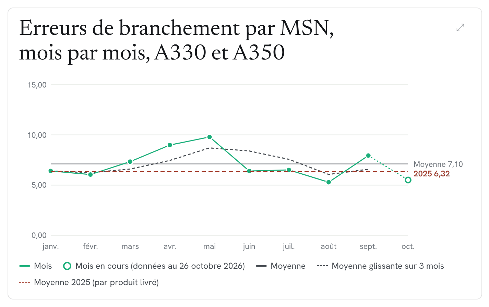
How to read it: the green line is the month; the black line is the average of the period; the dotted line smooths three months; the red dashed line is the average of last year. The hollow dot is the month in progress.
(The top three root causes of each product.) Products are sorted from the most affected to the least, in defects per MSN. Read it to know what to work on, product by product.
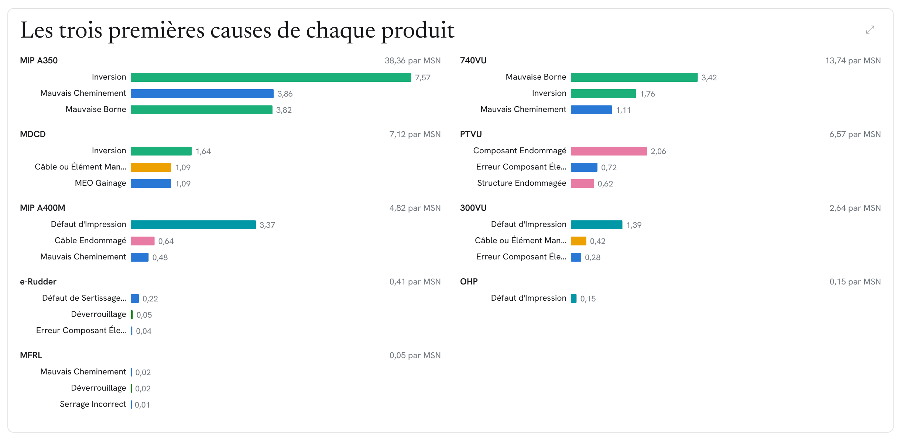
(Defect detail.) The line ▸ Détail des défauts at the bottom opens the list of the defects, one row per defect line of each NC, with its category, its cause, its official sub-code, its share of the NC's cost and its text. It has the same search box as the list of NCs.
Eight tabs to analyse. Each one opens with its key figures, then its charts; the list of the NCs or defects behind the tab is always at the bottom.
(Overview.) The whole selection, counted in NCs: each NC counts once, whatever its number of defects.
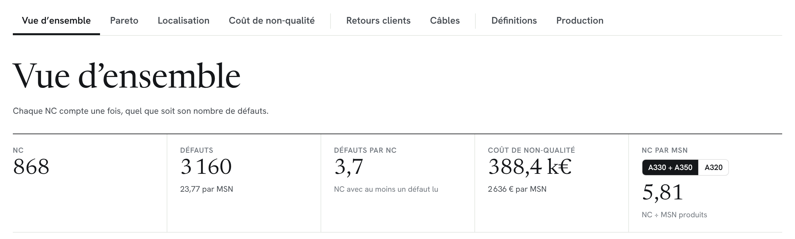
The key figure NC par MSN has a switch: A330 + A350, or A320, whose small parts are counted one by one and cannot be mixed with the others.
| Card | What it answers |
|---|---|
| NC cumulées sur l’année | Are we under the target? Same chart as in Synthèse (section 4.2). |
| Chaque ligne face à son objectif | Which line is above its target? (section 4.3) |
| NC par programme | The share of each line in the NCs. Click a line to keep it. |
| Combien de temps une NC reste ouverte | How fast NCs are closed, by decision (below). |
| Coût de non-qualité cumulé | The same curve as the NCs, in euros, with its forecast and its target. |
| NC par semaine, avec leurs limites | Is a week out of the ordinary? (below) |
| ▸ Autres listes et graphiques | NCs by product, by decision and status, opened and closed per month, by liability, by SAP defect code and SAP cause, and the calendar of the defects day by day. |
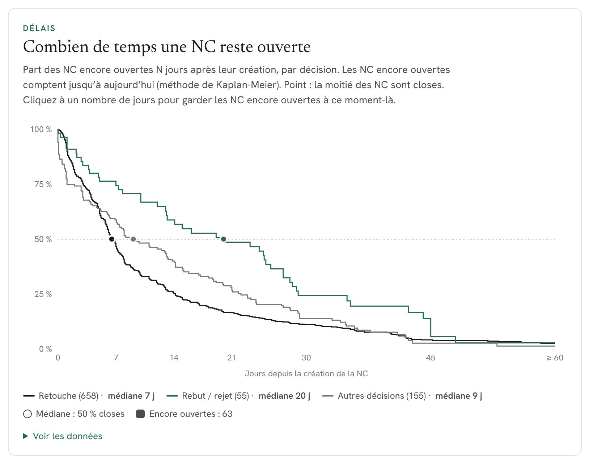
Combien de temps une NC reste ouverte (how long an NC stays open). Each curve starts at 100 % on the day the NCs are created and goes down as they are closed. The dot on a curve is the day when half of its NCs are closed: here 7 days for a rework, 20 days for a scrap or rejection. NCs still open are counted up to today. Click at a number of days to keep the NCs that were still open then.
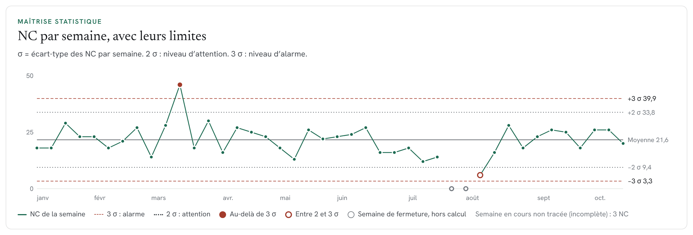
NC par semaine, avec leurs limites (NCs per week, with their limits). The line in the middle is the average week. The dotted lines are the attention level and the red dashed lines the alarm level: a week beyond the red line is not an ordinary week, and is worth a question. Shutdown weeks are left out of the calculation, and the week in progress is not drawn.
The defects of the selection, sorted: by category, by cause, by line, by official sub-code, by FIN.
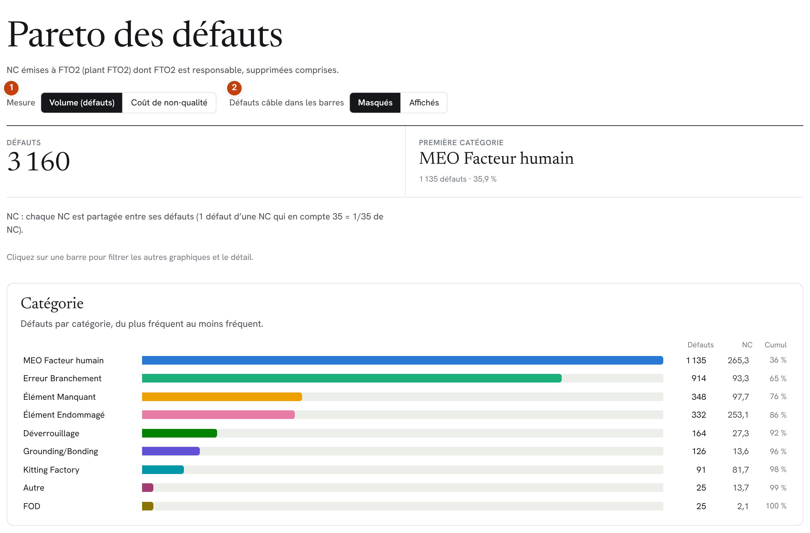
The two switches are those of the tab Détail: 1 Mesure counts defects or their cost, 2 shows the cable defects inside the bars. The tab opens on the cost. Click any bar to filter the other cards and the list (section 3.3).
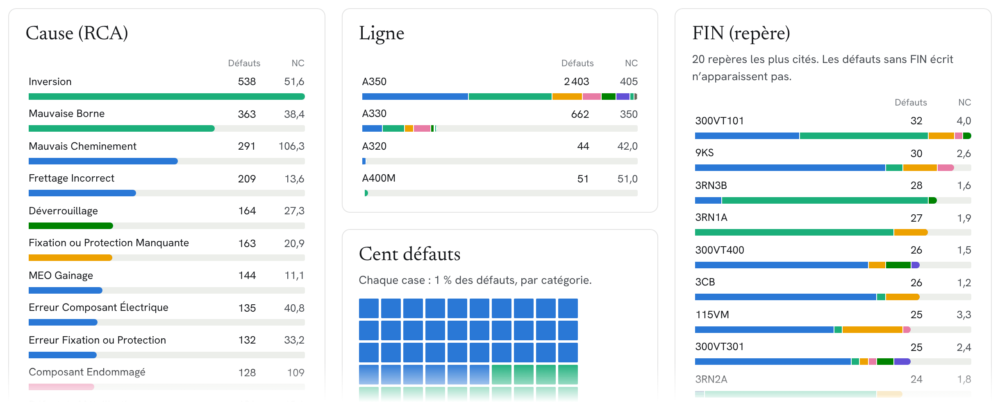
| Card | What it answers |
|---|---|
| Catégorie, Cause (RCA), Ligne, Sous-code officiel, FIN (repère) | Where the defects are, from five angles. The FIN card shows the 20 references named most often; defects with no FIN written are left out. |
| Cent défauts | A hundred squares: each one is 1 % of the defects, coloured by category. |
| Volume ou coût unitaire, Classement mensuel des causes | As in Synthèse (sections 4.6 and 4.4). |
| Du lieu de détection à la décision | The flow of the defects (below). |
| Erreurs de branchement (three cards) | Connection errors per MSN month by month, per product and cause, and per million connection operations on the MIP A350, with its target. |
| Causes : 2025 contre 2026, Les causes rapportées au volume | Each cause in defects per MSN: against last year, and ranked. |
| ▸ Autres graphiques | Cable defects per MSN month by month; which pins get swapped on the connectors where it happens most. |
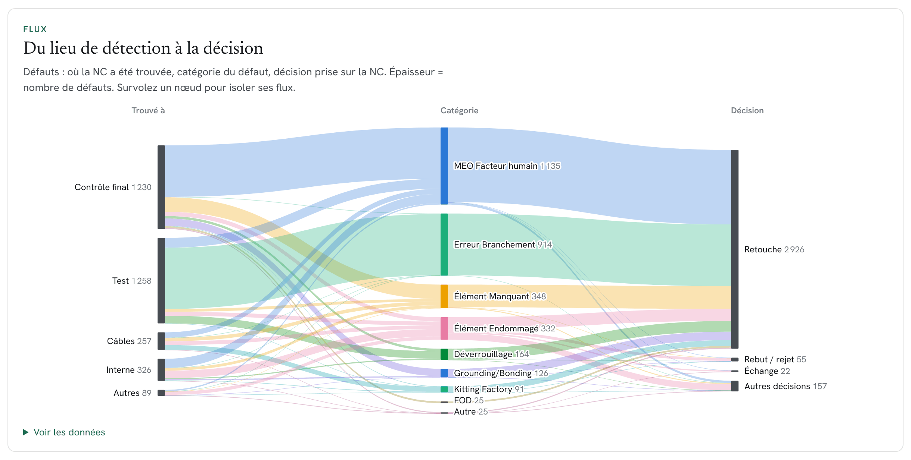
Du lieu de détection à la décision (from where it is found to the decision). Left: where the NC was found (final inspection, test, cables, internal). Middle: the category of the defect. Right: the decision taken on the NC. The thicker a band, the more defects. Point at a block to see only its bands.
(Location.) The same NCs by product, by aircraft and by station, set against the volume built wherever possible. The tab has three parts: Produits, Avions, Postes.
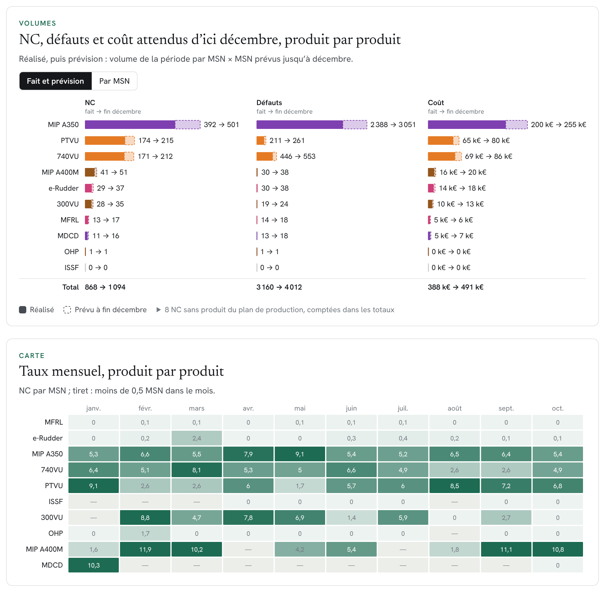
| Card | What it answers |
|---|---|
| NC, défauts et coût attendus d’ici décembre | For each product: done so far, then expected at the end of December (the rate of the period × the aircraft still planned). The switch Par MSN shows the same per aircraft built. |
| Taux mensuel, produit par produit | NCs per MSN, month by month: the darker the cell, the higher the rate. A dash: less than half an aircraft built that month, so no rate. |
| Coût par famille de produit | The ten costliest product families, with their number of NCs and aircraft, and the average cost per aircraft. |
| Les trois premières causes de chaque produit | As in Détail (section 5.4). |
| Coût par avion (MSN) | One bar per aircraft (below). |
| Les FIN qui reviennent d’un avion à l’autre | The references that come back (below). |
| Défauts par poste et catégorie | The twelve stations whose NCs carry the most defects, by category. The station is the one where the NC was written. |
| ▸ Autres graphiques | How far each product's rate can be trusted: the rate with its margin of uncertainty, wide when few aircraft were built. |
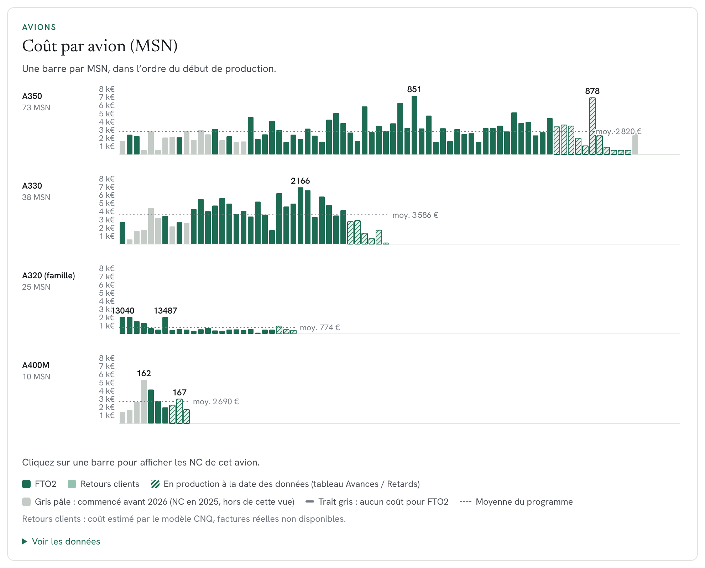
Coût par avion (MSN). One bar per aircraft, line by line; the dotted line is the average of the line. Hatched bars are aircraft still in production at the date of the data: their cost can still grow. Pale grey bars are aircraft started before this year. The aircraft far above the others are named. Click a bar to see the NCs of that aircraft.
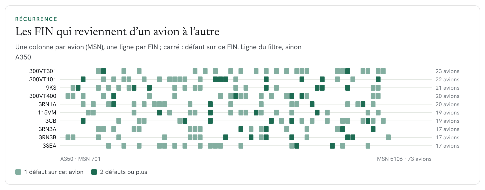
Les FIN qui reviennent d’un avion à l’autre (FINs that come back aircraft after aircraft). A square means a defect on that FIN on that aircraft; a dark square, two or more. A row full of squares is a defect that repeats on almost every aircraft: a candidate for an action. The chart shows the line chosen in the filter, or the A350 when all aircraft are shown.
At the bottom, ▸ Détail des NC : produit, avion, poste lists every NC. In this list, a click on a line, a product, an MSN or a station filters the whole page.
(Cost of non-quality.) What the NCs cost FTO2, and how that cost is made. It is an estimate built from the times of the AEC process, not an accounting figure (section 8.4).
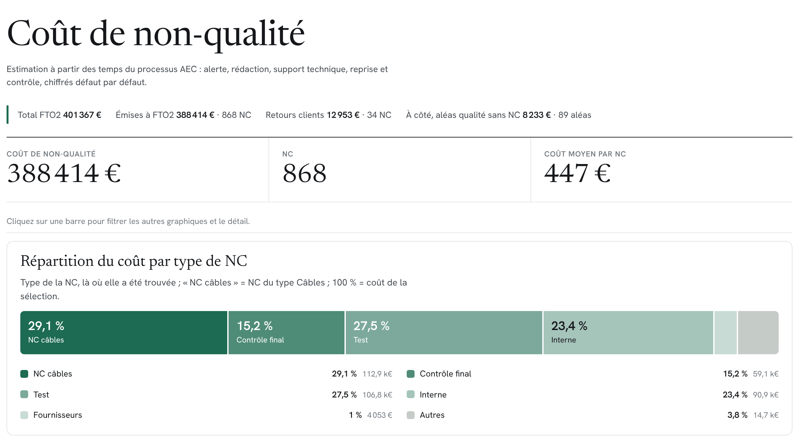
The line under the title gives the whole picture: the total for FTO2, the part raised at FTO2, the customer returns, and, beside them, the quality aléas that led to no NC.
| Card | What it answers |
|---|---|
| Répartition du coût par type de NC | The share of the cost by type of NC: cable NCs, test, final inspection, internal, suppliers. |
| Ligne, Produit, Décision, Mois de création | The cost from four angles. Click a bar to filter the other cards and the list. |
| De quoi est fait le coût, mois par mois | The handling of the NC, the rework, the material and the engineering, month by month. |
| Aléas qualité sans NC | The time lost on quality aléas that led to no NC (below). |
| ▸ Autres graphiques du coût | Every NC over time, as a bubble at the size of its cost; and how the rework was costed: from the planned time of the rework order, or from the model. |
| ▸ Expliquer le calcul | The calculation, step by step, and on any real NC (below). |
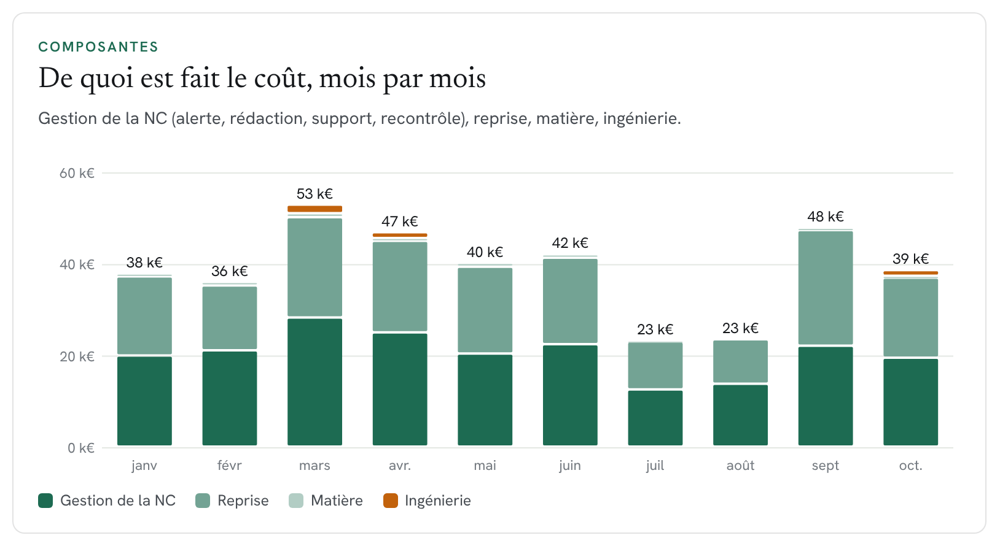
Open ▸ Expliquer le calcul. Everything the cost is made of is on the screen, with the figures of your selection.
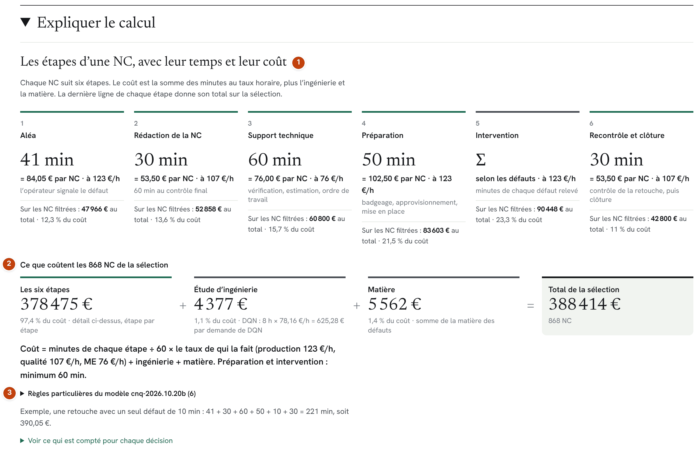
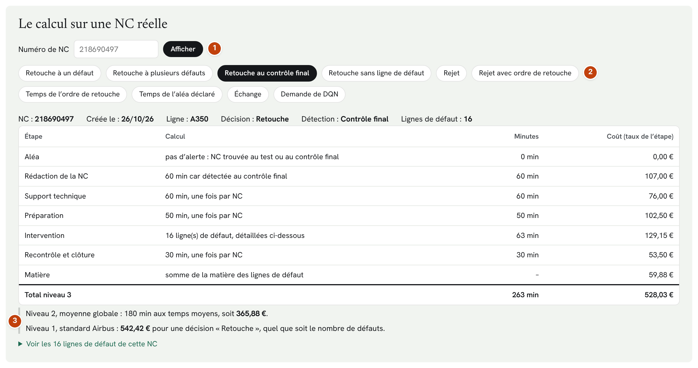
Under the table, ▸ Voir les lignes de défaut de cette NC lists each defect of the NC with the minutes and the material it adds.
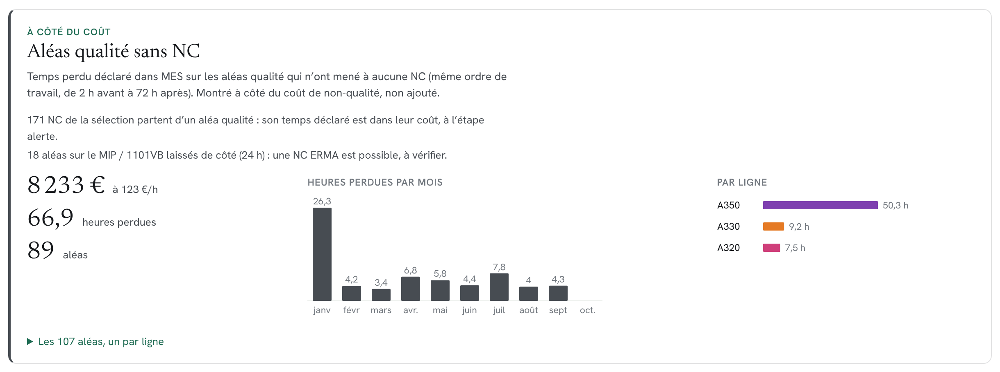
An operator who stops for a quality problem declares an aléa in MES. When an NC follows on the same work order, the time of the aléa is part of the cost of that NC. This card shows the others: the aléas that led to no NC, with the hours lost per month and per line. They are shown beside the cost of non-quality and are not added to it. ▸ Les aléas, un par ligne lists them.
(Customer returns.) The NCs raised outside FTO2, by the assembly lines or the customers, for which FTO2 is liable. They are counted in defects.
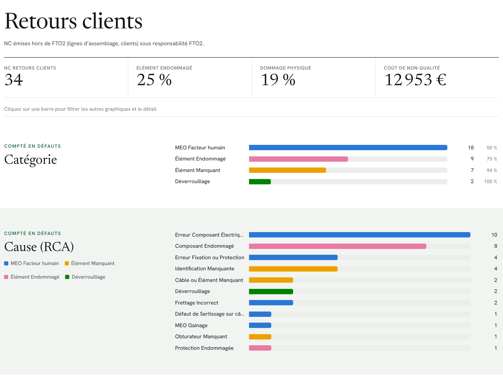
The cards show the returns by category, by cause, by type of damage, by line and by month. Click a bar to filter the others. At the bottom, ▸ Détail des retours clients lists them; click a row to read the full text of the NC, with the site that raised it.
(Cables.) The requests for new cables recorded by the cable team in its tracker: a cable too short, damaged, missing, cut or not conforming. This tab does not come from SAP but from the tracker; it follows the aircraft and the period of the filters.
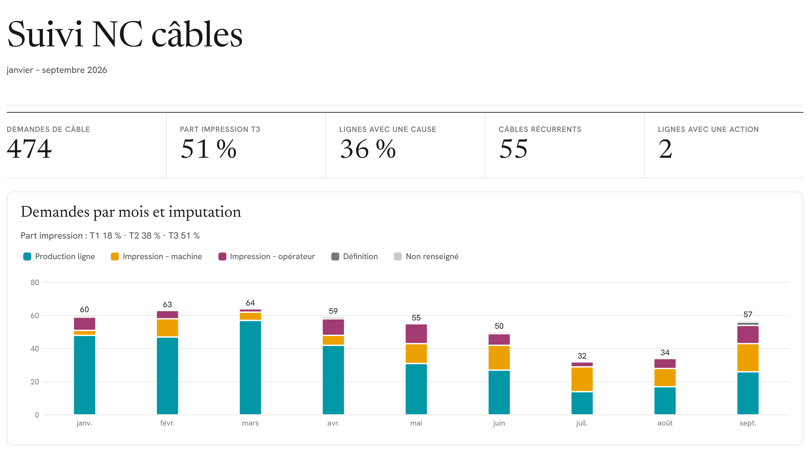
| Card | What it answers |
|---|---|
| Demandes par mois et imputation | How many requests each month, and who they are imputed to: the production line, the printing (machine or operator), the definition. |
| Motif × imputation | Each reason against each imputation: where the short cables come from, for example. |
| Types de câble, Câbles récurrents | The cable types asked for most, and the cables asked for again on several aircraft. |
| Causes (proposées) | The cause proposed for each request. Inconnu – à analyser counts the requests with no cause yet. |
| Demandes | The list of the requests, with a search box. |
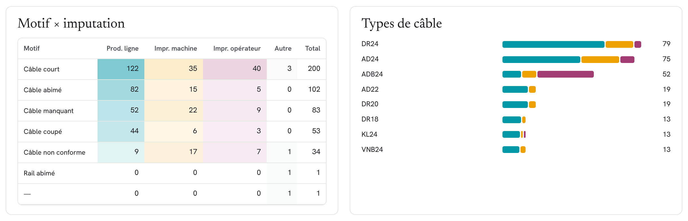
Click a reason, an imputation, a cause or a cable: the list of requests keeps only those, and a label at the top shows the choice.
(Definitions.) The dictionary of the dashboard: what each category and each cause means, with figures and real examples.
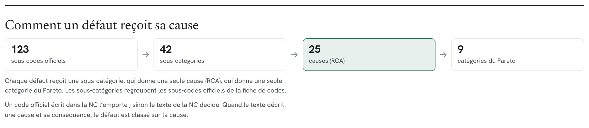
Each defect gets a sub-category, which gives exactly one cause (RCA), which gives exactly one category of the Pareto. An official code written in the NC decides; when there is none, the text of the NC decides. When the text describes a cause and its consequence, the defect is classified on the cause. The table under the diagram lists the causes with their figures; click a row to go to its definition.
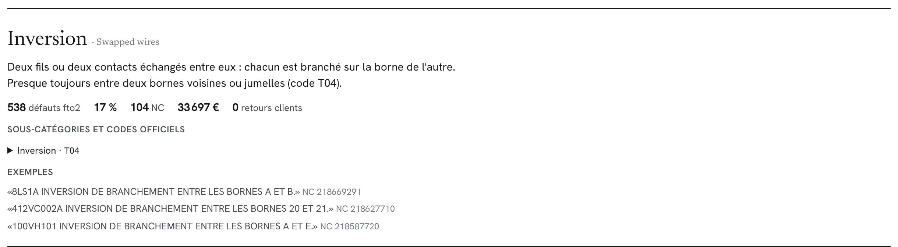
For each cause: its definition in one or two sentences, its number of defects and NCs, its cost, its sub-categories with their official codes, and three real examples with their NC numbers.
The volumes behind the rates: how many aircraft and products are built, planned and delivered, line by line and product by product. Come here when a rate surprises you.
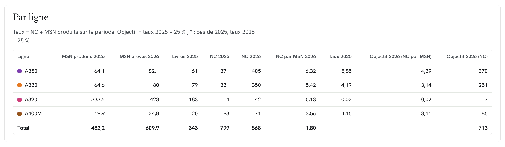
| Card | What it answers |
|---|---|
| 2025 et 2026, mois par mois | NCs, aircraft and NCs per aircraft, two years side by side (below). |
| Par ligne | The table behind the targets: MSN built and planned, delivered last year, NCs of both years, rate, and target in NCs per MSN and in NCs. |
| MSN prévus, mois par mois | The production plan of the year by line. Lighter colours: the months to come. |
| Par produit | The same table for each product of the production plan. |
| Comment ces chiffres sont faits et utilisés | In words: where the volumes come from, how an NC is matched to a product, how rates, forecasts and targets use them. |
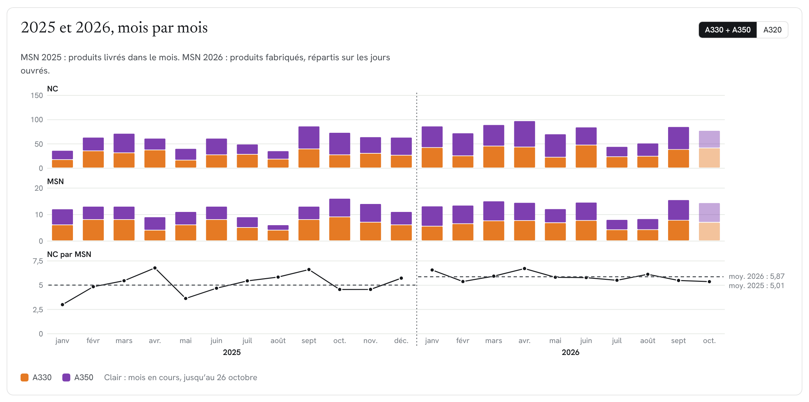
The bell does the weekly watch for you. Each time the data is updated, it looks at every line and lists what is rising more than chance can explain.
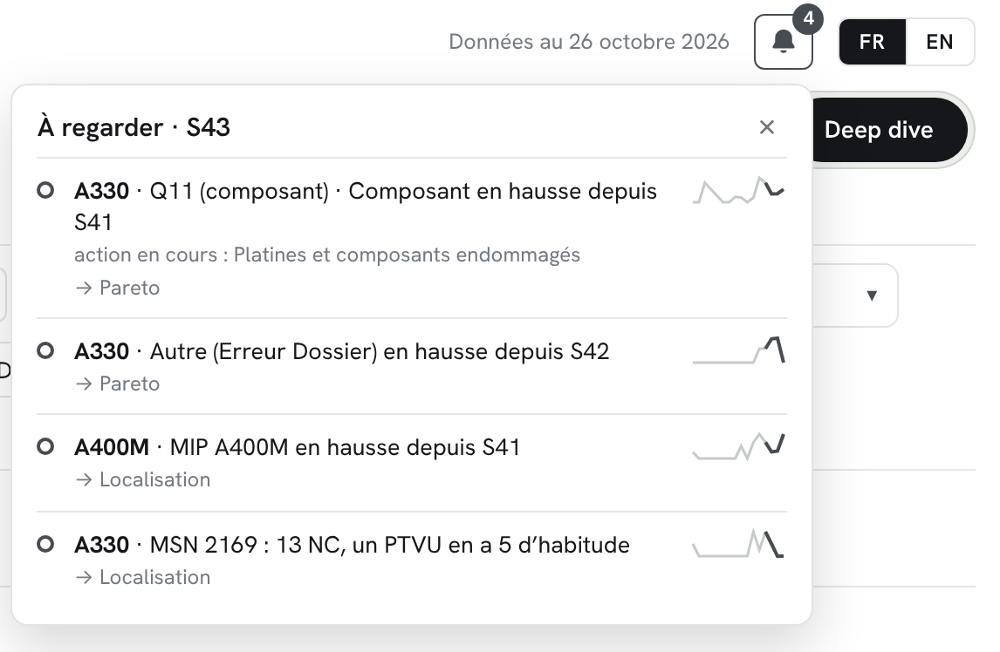
Line by line, it compares the defects of the last four finished weeks with the twelve weeks before, taking into account the number of aircraft built: more defects because more aircraft were built is not an alarm. It does this for the defects as a whole, and for each category, cause, official sub-code, station, product and place where NCs are found. It also catches two things a weekly comparison misses: a slow rise over several months, and an aircraft with far more NCs than its product usually has.
| On the line | Meaning |
|---|---|
| A330 · … en hausse depuis S41 | The line, what is rising, and since which week. |
| MSN 2169 : 13 NC, un PTVU en a 5 d’habitude | An aircraft with many more NCs than usual for this product. |
| action en cours : … | An MFT action already follows this problem (section 9.4). |
| → Pareto, → Localisation | Click the alarm: the page opens the right tab, filtered on the problem. |
| The small curve | The last weeks of this problem, at a glance. |
| A full red dot, a red bell | A major alarm: a strong rise. A hollow dot is a minor alarm. |
You do not need this chapter to read the dashboard. It is here for the day someone asks "where does this number come from?". The page itself says the same in two places: the tab Production, card Comment ces chiffres sont faits et utilisés, and the tab Coût de non-qualité, Expliquer le calcul.
| Word | What it means on the dashboard |
|---|---|
| An NC | One non-conformity of SAP. It counts once, whatever it holds. Deleted NCs are counted too: the work was done. |
| A defect | One line of defect inside an NC. An NC with 16 defect lines is 1 NC and 16 defects. |
| An FTO2 NC | An NC raised at the plant FTO2. This is what the page shows as it opens, with FTO2 liable. |
| A customer return | An NC raised elsewhere (an assembly line, a customer) for which FTO2 is liable. Counted apart, in its own tab. |
| A minor defect | A missing tie, lacing, cap or plug. The filter Défauts mineurs counts them or not. |
A few NCs have no defect line that can be read: the A400M NCs, whose text is not available, and some deleted NCs. They count as NCs and in the cost, not as defects. The notes at the bottom of each page give their number.
Counting NCs is not enough: a month with more aircraft has more NCs. So the dashboard divides by the volume built.
To be divided by a volume, an NC must be matched to a product of the production plan. A few cannot be: they count in every total, but not in the rates, the forecasts per product or the targets.
The reduction (25 %) and the year followed are settings kept by the person in charge of the dashboard. The page always writes the value in use next to the charts.
The cost is an estimate: the time each NC takes, at the hourly rate of who does the work. It is not an invoice and not an accounting figure. It is made to compare: between causes, between months, between lines.
| Step of an NC | What is counted | |
|---|---|---|
| 1 | Aléa (alert) | The operator reports the defect. Not counted for an NC found at test or at final inspection. |
| 2 | Rédaction de la NC | Writing the NC. Longer at final inspection. |
| 3 | Support technique | Checking, estimating, preparing the work order. |
| 4 | Préparation | Badging, fetching the parts, setting up. |
| 5 | Intervention | The rework itself: minutes for each defect, according to its kind. |
| 6 | Recontrôle et clôture | Checking the rework, then closing the NC. |
To these six steps are added the engineering study when a design query is raised, and the material. What is counted depends on the decision taken on the NC: a rework has all six steps, a deleted NC only the first two. When a rework order exists and is closed, its planned time replaces the model's times for steps 4 and 5. When the operator declared an aléa for the NC, the time lost declared replaces the time of step 1.
The exact minutes, the rates and the special rules are on the page, with the figures of the day: tab Coût de non-qualité, ▸ Expliquer le calcul (section 6.4).
Each defect line is classified from the text of the NC, following the definitions of the tab Définitions: it gets a sub-category, which gives one cause, which gives one of the nine categories. An official code written in the NC decides first; otherwise the text decides. A line written or changed since the last classification is read by simpler rules until the next one: its cause can be less precise for a while.
The page of the weekly review of a line: what happened this week, what is rising, and whether the actions work. It reads the same data as the dashboard, week by week.
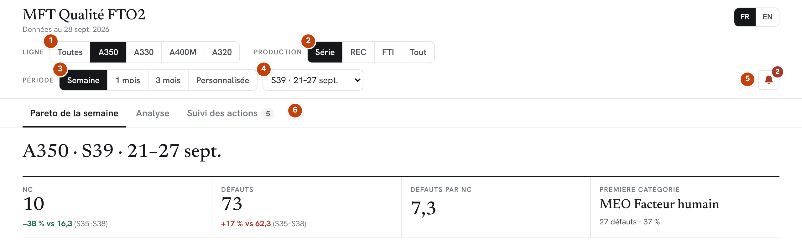
The title under the tabs always says what you are looking at: the line, the week and its dates.
(The week's Pareto.) The four figures at the top compare the week with the average of the four weeks before: in green when lower, in red when higher. The switch Compter counts defects or NCs.
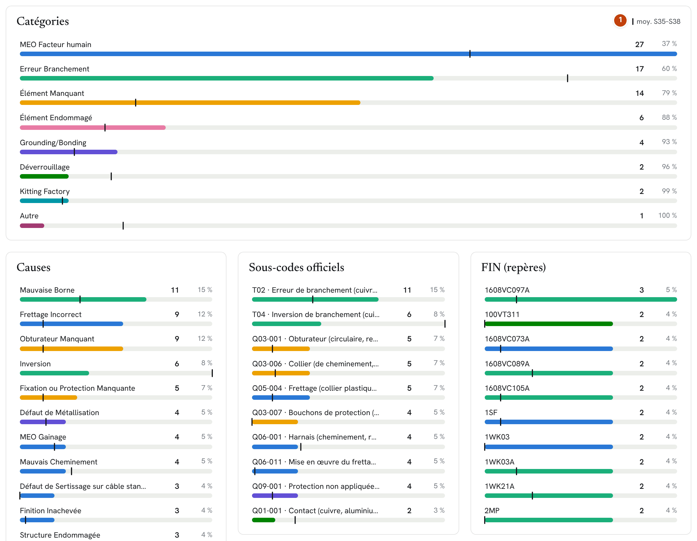
In every card, the bar is the week and the black tick 1 is the average of the four weeks before. A bar that goes past its tick is above its usual level. Under the cards, Les défauts lists the defects of the week with their text. Click a bar to keep only its defects, in the other cards and in the list: a label appears above the cards, its ✕ removes it.
(Analysis.) The last 26 weeks of the line, and what moves.
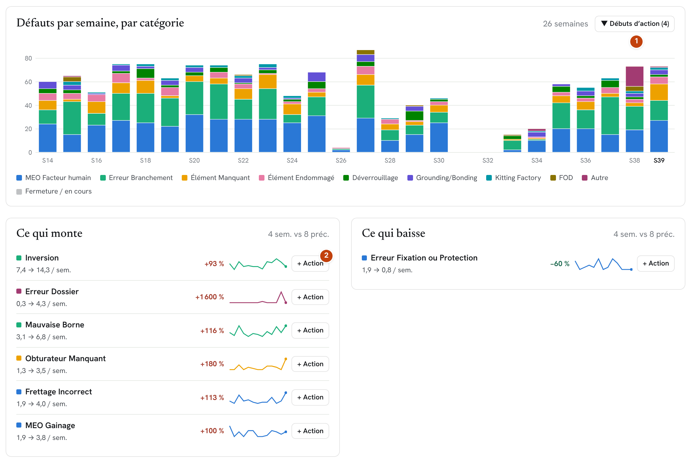
| Card | What it shows |
|---|---|
| Défauts par semaine, par catégorie | One bar per week, coloured by category. Débuts d’action 1 marks on the chart the weeks when actions started. |
| Ce qui monte, Ce qui baisse | What rises and what falls: the last 4 weeks against the 8 before, in defects per week. |
| Nouveau cette semaine | The causes and sub-codes seen this week and not in the 8 weeks before. |
| FIN récurrents | The references with a defect on three aircraft or more in 8 weeks. |
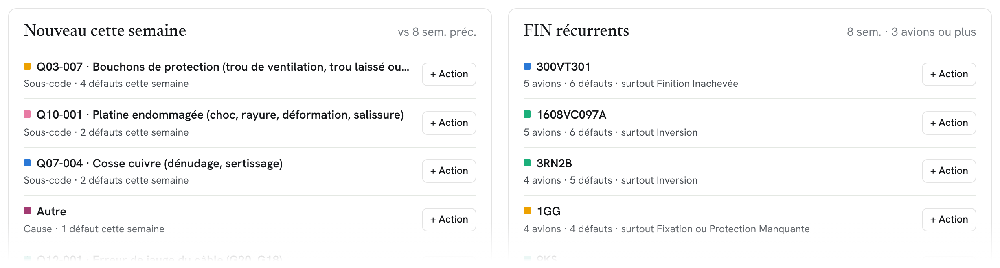
Every row has a button + Action 2: it opens the form of a new action, already filled with that problem.
(Action follow-up.) One card per action, with the curve of the problem it follows. It answers one question: since the action started, has the problem gone down?
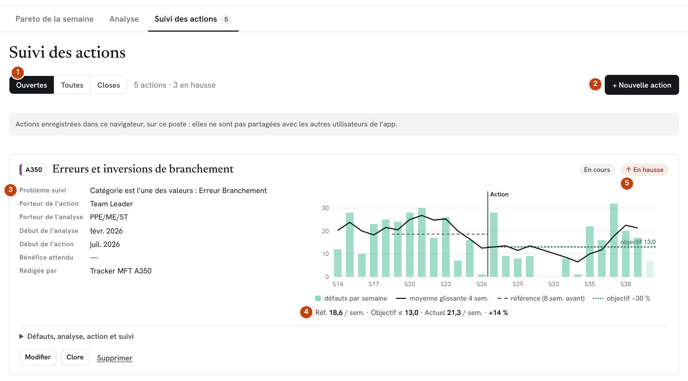
How the curve is read. The bars are the defects of the problem each week; the black line smooths four weeks. The reference is the average of the eight working weeks before the action started (before the analysis started, when the action has no start date yet). The target is the reference minus 30 %. The action has reached its target when the smoothed line stays under the target four weeks in a row. The vertical lines mark the start of the analysis and of the action.
| Verdict | Meaning |
|---|---|
| Objectif atteint | Under the target for four weeks: the action works. |
| Sous l’objectif depuis N sem. | Under the target, but not yet for four weeks. |
| En baisse, Stable, En hausse | Against the reference: falling, steady or rising, and not under the target. |
| Trop tôt pour juger | The action is too recent. |
| Pas de référence | No data for the eight weeks before the start, for example an action started at the very beginning of the year. |
| Date de début à saisir, Problème à préciser | The action lacks its start date, or the problem it follows. |
In a card, ▸ Défauts, analyse, action et suivi opens the defects of the problem and the notes of the action. Modifier changes it, Clore closes it, Supprimer deletes it.
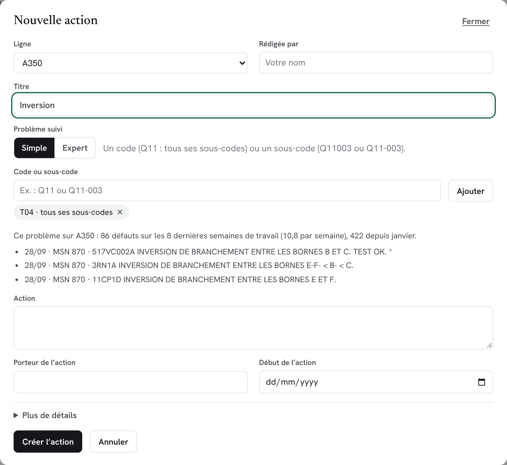
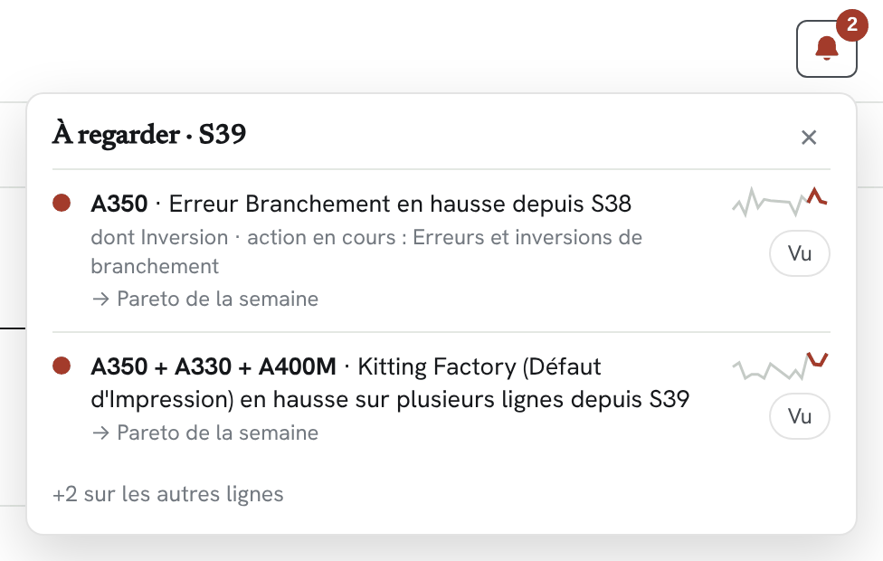
It works as on the dashboard (chapter 7), for the line you are looking at; alarms of the other lines are counted at the bottom. → Pareto de la semaine opens the week concerned. Vu (seen) puts an alarm aside once you have dealt with it, in your browser only; Remettre (put back) brings it back.
The most common uses, step by step.
What can surprise, and what to do.
| What you see | What it means, what to do |
|---|---|
| The page stays on the green box Chargement des données… | The data is slow to arrive. Wait a minute, then reload the page. If the box turns orange and names a query, tell the person in charge of the dashboard and give the text of the box. |
| A red box: Le tableau de bord n’a pas pu s’afficher… | The page met an error. Reload it. If the box comes back, send its text to the person in charge. |
| Skywise says you have no access | Your account has not been given the application. Ask the person in charge. |
| The date Données au… is old | The update has not been run. The figures are right, but stop at that date. Ask the person in charge. |
| The page is not as usual: another mode, another language | Use the buttons Essentiel / Deep dive and FR / EN at the top right. |
| Question | Answer |
|---|---|
| My total is not the one of SAP, or of another report. | Click ⓘ Comment la sélection est faite: it shows what each filter removed. The usual reasons: the production type (series only as the page opens), the plant (FTO2 only), the liability (FTO2 only), the dates, and deleted NCs, which the dashboard counts. |
| What are the NC sans produit du plan de production? | NCs whose product could not be matched to the production plan. They count in the totals, not in the rates and targets. The line opens to list them. |
| Why is the rate of the A320 so low, and its percentage so high? | Its products are small parts counted one by one: many units, few NCs. A few NCs more change its percentage a lot. Read the A320 in numbers of NCs. |
| The A400M has NCs but almost no defects. | The text of its NCs is not available, so no defect can be read. They count as NCs and in the cost. |
| Why do July and August look good in counts and not in rates? | Fewer working days, so fewer aircraft built: the rate divides by that smaller volume. |
| The last dot of a curve is hollow or the last bar is pale. | The month is in progress: it is judged on the days gone by, and will still move. |
| The cost does not match a figure from finance. | It is an estimate from process times and hourly rates (section 8.4), made to compare, not an accounting figure. |
| A cause looks wrong for a defect. | Check its definition in the tab Définitions. If the defect really is in the wrong cause, give the NC number to the person in charge. |
| The bell shows nothing. | Nothing is rising beyond chance; or it is the beginning of the year (chapter 7); or a filter limits it to one line. |
| In English, the NC texts stay in French. | They are the texts of SAP, shown as written. |
| Question | Answer |
|---|---|
| My colleagues do not see the action I created. | It is saved in your browser only. Give it to the person in charge, who adds it to the shared list (section 9.4). |
| My action has disappeared. | Actions typed on the page live in the browser: another computer, another browser or a cleaned browser does not have them. The actions of the shared list always come back. |
| An action says Pas de référence. | There is no data for the eight weeks before its start: an action started in the first weeks of the year, or with a wrong start date. |
The person in charge of the dashboard runs the update, keeps the settings (the target, the hourly rates, the shutdown days, the shared list of actions) and gives access. The companion guide Settings guide is written for that person. A question about the code goes to the person who maintains it, with the Technical manual.
The words of the dashboard, in the order of the alphabet.